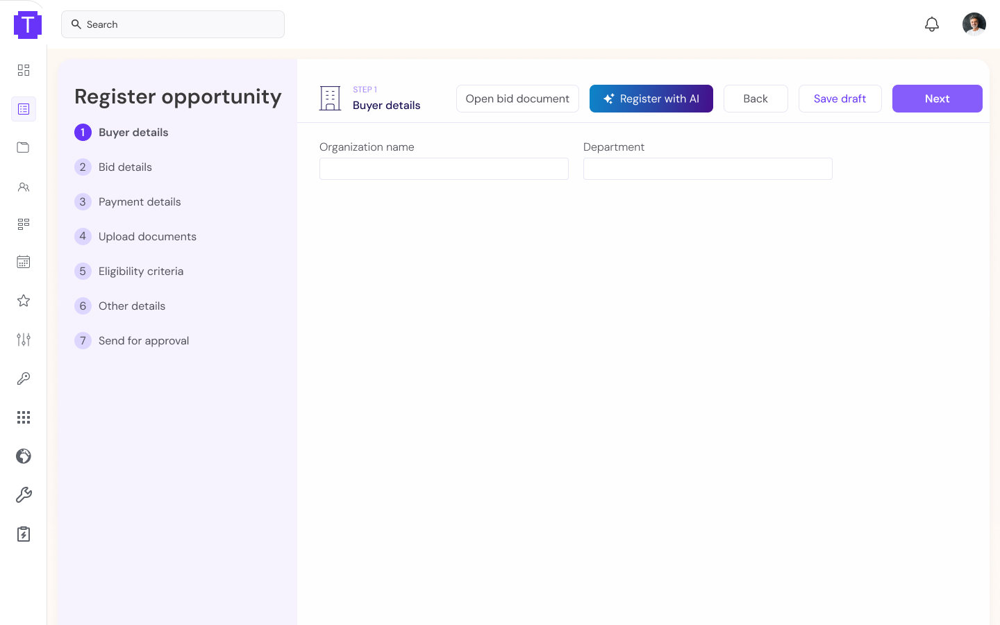
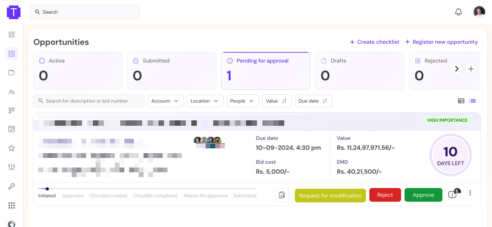
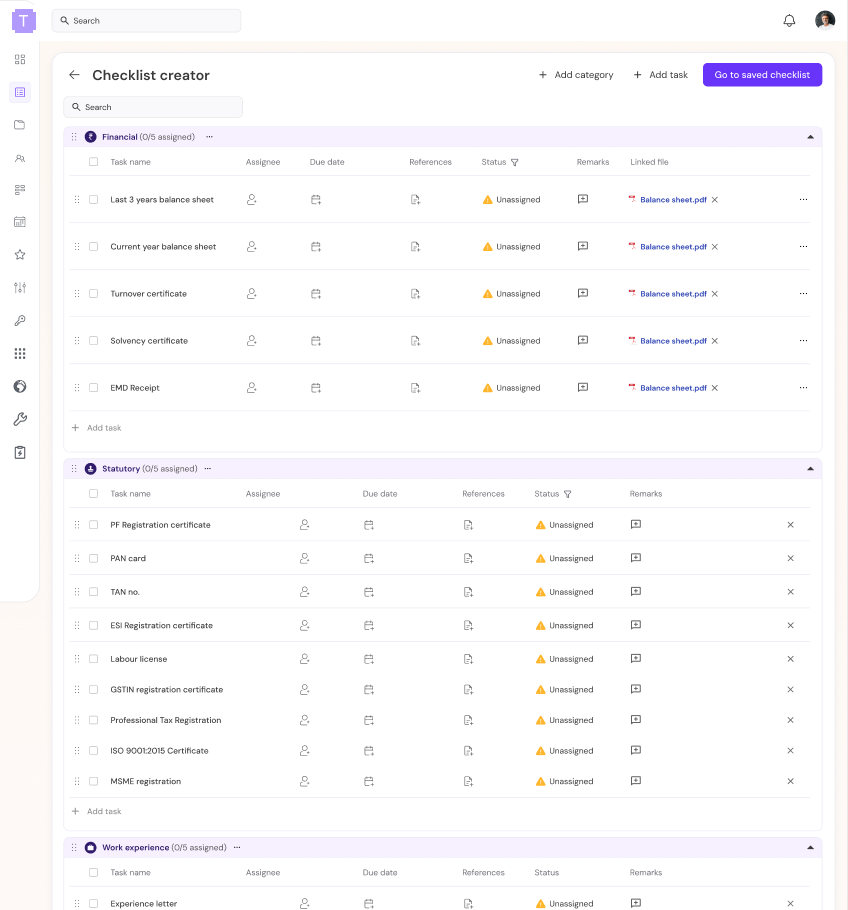

Case study · BidFlow
Designing the workflow behind AI-powered tender management
Designing BidFlow from 0→1 to help tender teams understand requirements, verify eligibility, and turn them into actionable work.
Project snapshot
Tender teams spent hours reading lengthy tender documents, cross-checking eligibility, gathering documents, and manually turning requirements into bid tasks. The process was fragmented, making it easy to miss requirements and slowing down decisions.
A unified bid workflow that uses AI to extract and organize tender requirements, surface eligibility gaps, and turn requirements into actionable tasks and document checklists, while keeping users in control of verification and decisions.
The product moved from zero to its first customers, and the team observed a substantial reduction in the time from receiving a tender to preparing a proposal. A repeatable workflow now connects tender analysis to bid preparation.
Context
First, what is a tender?
1Government / enterprise needs something
2Publishes a tender
3Companies compete to win the contract
The company I worked with helps businesses discover these opportunities and manage the work required to bid for them.
The team
So what does a tender team actually do?
- 01
Find an opportunity
One tender document arrives on an otherwise empty desk.
- 02
Understand requirements
Pages turn. Clauses get highlighted. Tabs mark the sections that matter.
- 03
Check eligibility
A checklist appears beside the document, with conditions to verify.
- 04
Prepare the bid
Requirements peel away from the document and become tasks: find the certificate, confirm the owner, get the signature.
- 05
Submit
The team assembles the final documents, but the desk is still full of all the work it took to get there.
The interesting part starts after a tender is found: the team has to turn a long document into a clear set of requirements, checks, documents and actions.
The challenge
Turning a tender into an actionable plan
Preparing a tender response involved much more than reading a document and writing a proposal.
Bid managers had to review lengthy tender documents, identify eligibility criteria, evaluate compliance against their company's capabilities, track deadlines, and identify every document required for submission.
For each required document, they also needed to determine whether it already existed, where to source it, which team or person owned it, and whether it needed to be newly prepared, reviewed, signed or stamped. Much of this work involved manually reading, copying, organising and cross-checking information across documents and teams.
The design opportunity
The engineering team was building an AI agent to analyse tender documents. My challenge was to translate that analysis into an experience that helped bid managers make decisions and move work forward. Two questions guided the design:
- How might we make AI-extracted tender information understandable, verifiable and actionable?
- How might we help bid managers coordinate the work required to prepare a complete tender response?
The opportunity was not simply to automate document reading. It was to connect tender analysis to the entire preparation workflow.
The manual workflow
The work hidden behind every tender
Review tender documents and locate relevant requirements, eligibility criteria and legal or compliance conditions.
Compare the tender's conditions with the company's qualifications, capabilities and available information.
Create a list of supporting documents and determine which are already available and which need to be prepared.
Source documents from the appropriate people, then track any required review, signatures, stamps or other actions.
Keep track of timelines, outstanding work and the final proposal documentation.
Extracting text from the tender solved only the first of these steps. The rest of the work happened around the document, which is why analysis alone was not enough.
Discovery
Understanding the bid manager's workflow
I examined tender documents and the activities involved in preparing a response to understand how information moved from the original tender into the team's day-to-day work.
This helped frame the problem beyond document analysis. Extracted information needed to support several interconnected activities: eligibility assessment, compliance checks, document collection, task coordination and deadline management.
Key areas of investigation
- How could requirements be extracted and organised into a useful summary?
- How could bid managers verify extracted information against the original tender?
- How could the product distinguish between documents already available and those requiring further action?
- How could the analysis translate into a coordinated plan for completing the bid?
Ideation
Four directions for connecting analysis to action
There was more than one way to turn tender analysis into something useful. These are the directions I weighed, each answering a different part of the bid manager's workload.
Direction A
Automated tender summary
Extract key requirements, eligibility conditions, dates and submission criteria into a prioritised summary.
Potential value
Reduce the effort required to locate important information.
Direction B
Eligibility and gap analysis
Compare tender requirements with company information to surface potential eligibility issues, compliance gaps and missing information.
Potential value
Help bid managers identify what needs attention before proceeding.
Direction C
Automated checklist and document tracking
Generate a list of required documents and tasks, with follow-up actions based on document availability and preparation needs.
Potential value
Connect tender analysis with execution.
Direction D
Timeline and bid coordination
Organise activities around deadlines, task ownership, reminders and submission milestones.
Potential value
Help teams coordinate the full preparation process.
Design decisions
Three decisions that shaped the product
Three design challenges shaped how tender analysis became something a bid manager could trust and act on.
Decision 01
Making AI uncertainty visible
- The problem
- Tender documents didn't follow a single consistent template. Variations in structure and formatting meant the AI could miss information or extract it incorrectly.
- The design response
- I introduced AI confidence scores to communicate the system's confidence in its extracted information.
- The trade-off
- Confidence indicators could help users identify information that deserved closer attention, but they could not guarantee that an extraction was correct. The interface still needed to support verification.
Decision 02
Keeping the original tender within reach
- The problem
- Even when the AI produced a useful analysis, bid managers still needed to check whether the information matched the original document.
- The design response
- I designed a quick-access panel to make the analysis accessible alongside the source document, supporting a verification workflow without requiring users to rely solely on the AI's interpretation.
- The trade-off
- Presenting the analysis more conveniently could reduce the effort of switching between views, but it did not remove the need for users to review the source.

Decision 03
Extending analysis into bid execution
- The problem
- Understanding a tender was only the beginning. Bid managers still had to identify missing documents, source existing ones, assign work and prepare new materials before the deadline.
- The design response
- The product extended into document requirements, checklists, task management and timeline-related workflows, so the analysis led directly into the work of preparing the bid.
- The trade-off
- A richer workflow could support more of the bid-preparation process, but it also introduced more information and coordination to manage. The design needed to make the next actions clear without overwhelming the user.


Outcomes
From document analysis to a broader bid-management workflow
The product was designed to bring together tender analysis and the activities required to prepare a response, rather than leaving bid managers to coordinate every step manually.
During my time on BidFlow, the product progressed from zero customers to its first customers as early sales began, and the team observed a substantial reduction in the time required to move from receiving a tender to preparing a proposal.
Customers
From zero customers to its first customers as early sales began.
To be added
Tender-to-proposal turnaround
A substantial reduction in the time from receiving a tender to preparing a proposal, observed by the team.
To be added
These are early product outcomes, not a controlled measurement of design impact. I would not attribute the turnaround improvement to any single feature.